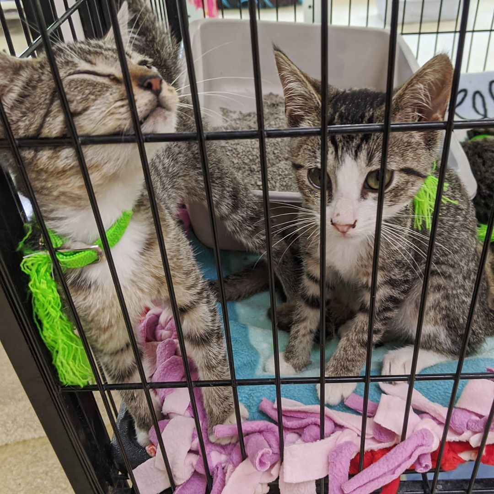
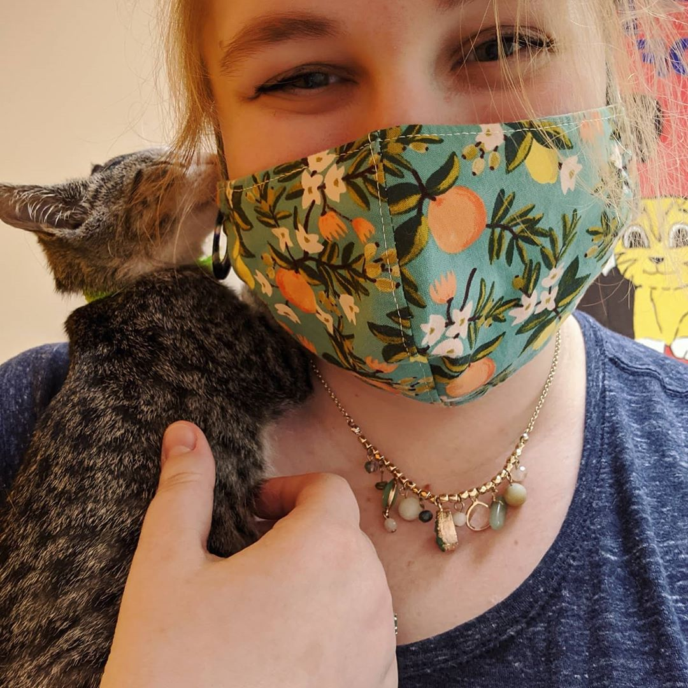
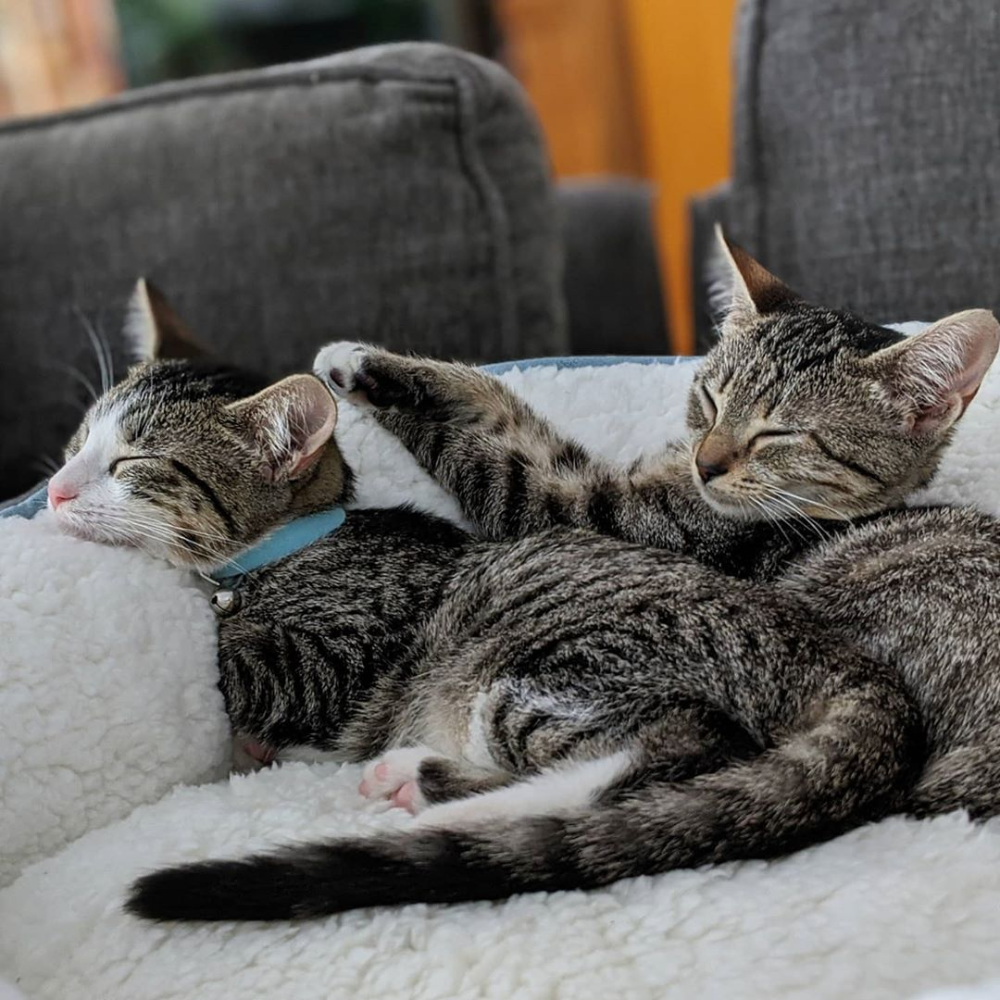
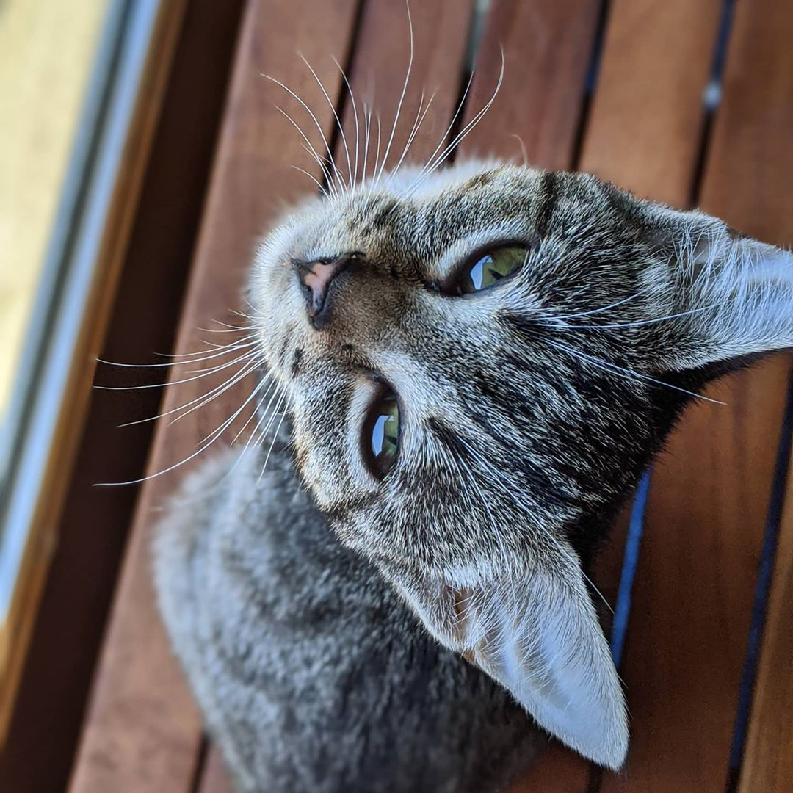
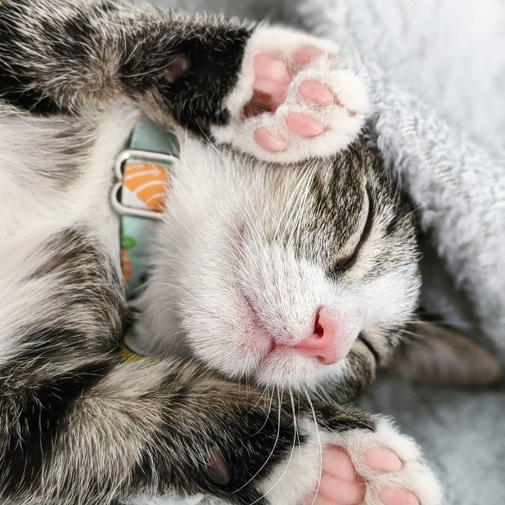

Adoption Day
Introducing… Nori and Dashi! Here they are on their adoption day, July 9, moments after first meeting them. Nori's the affectionate girl to the left and drew me in right away.

When I Knew
The girls arrived at the shelter the day before with their two brothers. I had a hard time deciding on the second cat I'd take home, but Dashi was so cuddly that she stole my heart.

Sisters & BFFs
Their family bond is so special! These two love to cuddle together and are often found napping on each other.

Fearless Nori
Nori is the smaller cat, but don't let that fool you. She is brave, curious, and has a monstrous appetite.

Sweet Dashi
Dashi is more timid than Nori. Once she warms up to you, though, she is extremely sweet and loves to take naps on or against her favorite people.